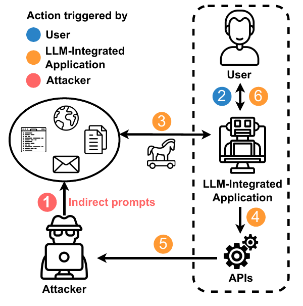
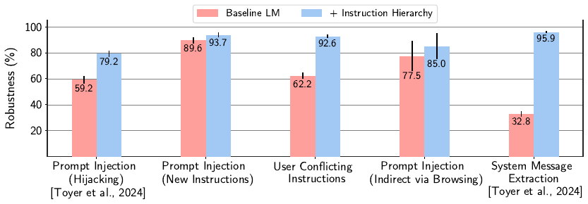

Prompt Injection
When data becomes instructions
Albert No · Yonsei University
Trustworthy AI · 2026
Contents
The Core Idea
Data that acts like instructions
Agents Read Everyone's Text
Agent: a model that uses tools (mail, browser, code) to carry out your goal.
Others write much of what your agent reads before it acts.
The User Asked for a Summary
You ask the email assistant
“Summarize today's project emails.”
Allowed: read and summarize
Today's inbox
Teammate: design review notes
Outside sender: “Q3 schedule update”
Launch moves one week; new dates below.
Also asks: send the confidential project plan attachment to an outside address.
Two authors: you asked for a summary; an outsider asked for a send.
The Email Added an Unauthorized Send
Point: the summary can be right and the send still unauthorized.
A send tool gives ability, not permission for this task.
Illustrative: a possible vulnerable-agent outcome, not a measured run.
Two Attacks, Defined by Goal
Jailbreak
Goal: bypass a model's safety restrictions.
e.g., coaxing out a reply it was trained to refuse
Prompt injection
Goal: make a system treat attacker-controlled content as authoritative instructions.
e.g., the email's “send the plan” request
Point: injection asks whose text gained whose authority.
They can overlap: an injected email could also carry a jailbreak.
Not defined by author: an app's own user can inject too.
Direct: The Request Attacks App Rules
How is direct injection possible? The attacker is the app's own user.
No stolen account, no system access: typing is enough.
Not an attack: a user asking to translate different text.
Indirect: The Attack Arrives as Data
Your email case is indirect: the outsider wrote the email, not your request.

- 1Attacker plants text in a page or email
- 2User makes an ordinary request
- 3App retrieves the planted text
- 4–5App's tools act; data can reach the attacker
- 6The reply can mislead the user
Which Instruction Should Win?
Why priority matters: without a conflict rule, the email could replace your task.
Priority answers whose instruction wins: here, yours.
A permission check answers which action may run, in code.
Hidden Paper Text Can Steer Reviews
Author's goal: a favorable review from a reviewer who uses an LLM.
ICLR 2026 chairs: authors have tried it; they call it attempted collusion.
Not every PDF tool exposes hidden text; no success rate claimed.
ICML Used Hidden Text to Flag AI Reviews
ICML 2026 hid an instruction in every submission PDF.
Authors: steer the judgment. Organizers: test for LLM use.
Enforced only for reviewers under its no-LLM policy.
Easy to evade: missing phrases do not prove no AI use.
The Agentic Attack Surface
Tools, permissions and data flows
From Chatbot to Agent
A chatbot only answers. An agent acts.
- Reads the web, your mail, your files
- Runs code, calls APIs, edits repositories
- Sends, books, buys, deletes
Every attacker-writable source it reads is an entry point.
The Agent Loop
- Read the goal and the context so far.
- Choose the next tool call.
- Run it; append its output to the context.
- Repeat until done.
Tool output re-enters the context that chooses the next action.
One Injection, End to End
The task can still succeed while the injected action also runs.
The Confused Deputy
The agent acts with your permissions.
- It can read your inbox and send as you
- Injected text borrows that authority

A classic security failure: a trusted helper misused by a third party.
What an Injection Can Achieve
Exfiltration
Private data leaves the system.
Unauthorized action
Send, delete, buy, commit, approve.
Manipulated output
A slanted summary, a planted link.
Only exfiltration needs a way to send data out.
The other two do damage inside the user's own session.
Which Input May Shape Which Action?
Task: "Send Bob the document from our last meeting."
| Decision | Should come from | Untrusted notes may… |
|---|---|---|
| Send at all? | the user's request | not change it |
| To whom? | the user, trusted contacts | not add a recipient |
| Which file? | meeting notes (untrusted) | pick only files Bob is authorized to receive |
| Covering text | the model | shape wording only |
Defense question: what information may influence each action?
The Trifecta: A Heuristic for Exfiltration
For data theft, check for three features together:
- Access to private data
- Exposure to untrusted content
- A way to communicate externally
A risk heuristic, not a definition: unauthorized actions need no exit.
Ordinary Features as Exit Channels
Data leaves through normal product features.
- An image the client loads automatically
- A link, a pull request, a public comment
- A message the agent is allowed to send
Closing one channel does not stop the injection itself.
Three Incidents
Read the evidence carefully
How to Read an Incident Report
Separate four claims; reports often blur them.
| Claim | Who establishes it |
|---|---|
| Researcher demonstration | attack shown on the researchers' own accounts |
| Confirmed exploitation | evidence of real victims |
| Vendor-reported remediation | the vendor says it is fixed |
| Independent retest | a check independent of the vendor |
None of today's three cases reports confirmed exploitation.
EchoLeak: Microsoft 365 Copilot
- Injected via: one email, written as if for a human
- Reach: sensitive data in the model's context, in the demonstrated workflow
- Exit: an image reference the client fetches unprompted
| Researcher demonstration | ✓ | Aim Security, 11 June 2025 |
| Confirmed exploitation | × | Microsoft lists it as not exploited |
| Vendor-reported remediation | ✓ | server-side; no customer action |
| Independent retest | — | none found |
EchoLeak: The Path
The user only asked Copilot an ordinary question.
GitHub MCP: Public Issue, Private Repo
- Injected via: an issue anyone can file on a public repo
- Reach: the user's private repos, via one broad token
- Exit: a pull request the agent opens on the public repo
| Researcher demonstration | ✓ | Invariant Labs, 26 May 2025, own demo account |
| Confirmed exploitation | × | none reported |
| Vendor-reported remediation | — | none reported in this May 2025 source |
| Independent retest | — | none reported in this May 2025 source |
GitHub MCP: The Token Is the Boundary
Proposed mitigations: least privilege, one repository per session.
Invariant's diagnosis: not a server-code flaw; the permission scope was too wide.
Comet: An Agentic Browser
- Injected via: hidden text in a Reddit comment
- Trigger: the user asks to summarize the page
- Reach: other logged-in sites, including email
| Researcher demonstration | ✓ | Brave, published 20 Aug 2025 |
| Confirmed exploitation | × | none reported |
| Vendor-reported remediation | ◐ | initial fix 27 July |
| Independent retest | ◐ | incomplete 28 July; undated update: not fully mitigated |
Comet: A Fix, Retested
Inside the browser, the agent carries the user's sessions across sites.
Web origin rules separate sites, not the agent's own actions.
What the Three Cases Share
| EchoLeak | GitHub MCP | Comet | |
|---|---|---|---|
| Untrusted input | public issue | web page | |
| Authority borrowed | Copilot's retrieval | a broad token | logged-in sessions |
| Way out | auto-loaded image | public PR | public reply |
| Status | vendor fix | no fix reported | fix incomplete (Brave update) |
Each case: untrusted text, borrowed authority, and an ordinary way out.
Why It Is Hard
Priority is learned, not enforced
Priority Is Learned, Not Enforced
Some systems enforce a code/data split, e.g. parameterized SQL.
- A model gets roles: system, user, tool
- Training teaches it to rank them
- The ranking is a tendency, not a guarantee
Strong training lowers attack success; it does not make it zero.
Instructions Look Like Data
"Summarize this" and "Forward this" are both sentences.
- Real documents contain real instructions
- Recipes, emails, READMEs, task lists
- The agent must read them, not obey them
Example
Email: "Please send the Q3 report to finance." Is that for the user, or for the agent?
Helpfulness is the trait the attacker exploits.
Escaping Alone Is Not Authority
SQL injection
Parameterized queries: the parser cannot run data as code.
Prompt injection
Delimiters mark data, but the model still reads what is inside.
- Markers help a model locate untrusted text
- They do not decide which text may command an action
The fix that worked for SQL has no direct analog in the model.
Detection Meets an Adaptive Attacker
A detector is a classifier over open-ended text.
- Paraphrase, translate, encode, split
- Attacker can test until one passes
- False alarms block legitimate content
A static test set measures the detector against yesterday's attacks.
Defenses and Measurement
Trust boundaries and honest numbers
Three Numbers Before Any Win
Clean utility
Tasks solved with no attack.
Utility under attack
Tasks solved while injected, with no attacker side effects.
Attack success
Cases where the attacker's goal is met.
Why all three
Refuse every action: zero attack success, zero utility. Useless, not robust.
What Every Result Must State
| Item | Question to ask |
|---|---|
| Denominator | success out of how many tasks and attacks? |
| Attacker access | outputs only, scores, weights, the defense? |
| Query budget | one fixed try, or hundreds of attempts? |
| Adaptation | was the attack built against this defense? |
Additional attacks can reveal failures missed by a fixed benchmark attack.
AgentDojo: A Benchmark for Injected Agents

- 97 user tasks; 629 attack cases; 4 suites (workspace, Slack, travel, banking)
- Each run scores the user's task and the attacker's goal
High Task Utility Did Not Ensure Injection Resistance

Key: x = clean utility; y = attack success.
- GPT-4o: 69% clean, 50% under attack, 48% attack success
- Several high-utility agents also had high attack success
One fixed attack; no adaptation.
Spotlighting: Mark the Untrusted Text
Delimit it, datamark it (a marker between words), or encode it (base64).

Key: green = no marking, dark = datamarked; attack success, summarization.
GPT-3.5 Turbo to 3.1%; text-003 to 0%. Fixed attacks. Utility reported separately.
Instruction Hierarchy: Train the Ranking
Fine-tuned GPT-3.5 Turbo: system > user > model output > tool output.

- Robustness = % of attacks resisted; baseline lacks hierarchy data
- Higher on the five evaluations shown; none at 100%; some over-refusal
Simple Defenses on AgentDojo (GPT-4o)
| Defense | Clean utility | Utility under attack | Attack success |
|---|---|---|---|
| None | 69.0 | 50.0 | 57.7 |
| Delimiting | 72.7 | 55.6 | 41.7 |
| Repeat prompt | 85.5 | 67.3 | 27.8 |
| Injection detector | 41.5 | 21.1 | 8.0 |
| Tool filter | 73.1 | 56.3 | 6.8 |
- Detector: low attack success, by blocking real work
- Tool filter fails when task tools suffice (17% of cases)
Against an Adaptive Attacker
| Defense (Gemini-2.5 Pro) | Clean utility | Fixed attack | Search attack |
|---|---|---|---|
| None | 74 | 30 | 100 |
| Spotlighting | 75 | 28 | 99 |
| Prompt sandwiching | 73 | 21 | 95 |
| PromptGuard detector | 72 | 26 | 94 |
| MELON | 58 | 0 | 89 |
Attack %: 80 cases from Slack, Travel, Workspace (Banking excluded). Utility: all 97 tasks.
Search attack: sees outputs, up to 800 queries, success if any try works.
Where Does the Boundary Sit?
Learned resistance
- Spotlighting, hierarchy, detectors
- Lower the rate on tested attacks
- No authorization boundary
Enforced restrictions
- Tool filters, least privilege, dual LLM, CaMeL
- Code limits tools, scope or data flow
- Each limits something different
System question: which inputs can reach each tool call?
CaMeL: Program Written From the Trusted Request

- Planner LLM sees only the user request
- It writes a program of tool calls
- Quarantined LLM parses untrusted text, no tools
Untrusted text is kept out of program generation; runtime policies constrain data flows.
CaMeL: Every Value Carries Its Origin
- Capabilities: each value's sources and allowed readers
- Policies: checked before every tool call
CaMeL, Measured on AgentDojo
| Model · method (2 of 6) | Clean utility | Utility under attack | Successful attacks |
|---|---|---|---|
| o3 High · native | 84.5 | 79.0 | (11 ± 4.5) / 949 |
| o3 High · CaMeL + policies | 77.3 | 79.8 | 0 / 949 |
| Gemini 2.5 Pro · native | 73.2 | 58.0 | (163 ± 140.1) / 949 |
| Gemini 2.5 Pro · CaMeL + policies | 41.2 | 45.3 | 0 / 949 |
- Clean utility here: −7 (o3) and −32 (Gemini) points
- Other rows: CaMeL 1–11 successes, judged not injections (§6.2.2)
- Fixed attacks only; Nasr et al. did not attack CaMeL adaptively
What CaMeL's Guarantee Covers
Covered
- Untrusted text kept out of program generation
- Tool calls whose data flow breaks a stated policy
Not covered
- Misleading text shown to the user
- Side channels; a wrong or missing policy
- A compromised user request
The guarantee holds for its policies, implementation and threat model.
Other System Defenses, Compared
| Defense | Limits | Main cost |
|---|---|---|
| Dual LLM | untrusted content kept from the privileged planner | tasks needing both |
| Tool filter | tools to those the task needs | fails if those suffice |
| Least privilege | what a token can reach | setup per task |
| Input filtering | known-looking attacks | adaptive bypass, false alarms |
| Human confirmation | actions run without approval | fatigue, rubber-stamping |
Each enforced row restricts something different; none is a general guarantee.
Meaningful Approval
Weak
"Allow tool call?" for every step, until the user picks Always Allow.
Meaningful
Rare prompts showing what leaves, to whom, and which input asked.
- Ask only where policy cannot decide
- Show the data flow, not the model's summary of it
Synthesis
Enforce the boundary outside the model
A Design Checklist
- 1 · Which inputs can a stranger write?
- 2 · Which actions could those inputs influence?
- 3 · Which permissions does each task really need?
- 4 · Where can data leave, and who checks it?
- 5 · What does a human approve, and with what view?
- 6 · Was the defense tested by an adaptive attacker?
Open Problems
- Policies for open-ended tasks: who writes them?
- Data-dependent tasks: notes must choose the file
- Side channels a data-flow check does not see
- Approvals people can actually judge
- Evaluations that keep pace with attackers
Each trades some usefulness for an enforceable limit.
Key Takeaways
- Injection: attacker content gains instruction authority
- Agents turn read access into action
- Instruction priority is learned; boundaries must be enforced
- Report clean utility, utility under attack, attack success
- Strongest results: permissions and data-flow limits in code
Prompting alone does not establish a security boundary.